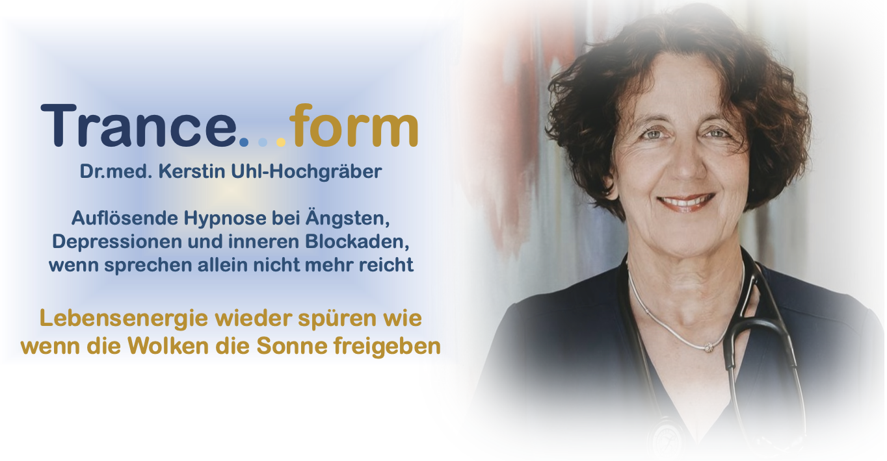

In der Inneren Medizin untersuchen wir das Herz, die Lunge, das Blut. Aber das Gefühl von Erschöpfung, Herzrasen, oder die schlaflose Nacht lässt sich oft nicht im Laborwert messen.
Trotz moderner Diagnostik stoße ich als Internistin oft an Grenzen, wenn die Seele durch den Körper spricht. Auf der Suche nach einer Methode, die die Symptome an der Wurzel löst, bin ich auf die Auflösende Hypnose nach Floris Weber gestoßen.
Diese Form der Hypnosetherapie arbeitet nicht mit esoterischen Versprechen, sondern mit der gezielten Verarbeitung von gestauten Emotionen im Unterbewusstsein.
Wenn Sie spüren, dass Ihr Körper Ihnen Signale sendet, die wir rein medizinisch nicht vollständig lösen können, lade ich Sie ein: Lassen Sie uns gemeinsam schauen, welche emotionalen Blockaden dahinterstehen.
Das Ziel ist echte, spürbare Erleichterung. Damit Sie nicht nur körperlich gesund werden, sondern sich auch innerlich wieder frei und sicher fühlen.
Als Fachärztin und Hypnosetherapeutin begleite ich Sie auf dem Weg zu innerer Freiheit und emotionaler Gesundheit.
Gesundheit ist mehr als die Abwesenheit von Krankheit -
Sie ist die Freiheit von inneren Blockaden
Den Alarmzustand beenden indem wir den emotionalen Ursprung finden und neutralisieren.
Wenn das Herz rast oder die Luft knapp wird, ohne dass ein organischer Befund vorliegt, ist das oft ein „Fehlalarm" des Unterbewusstseins. Mit der Auflösenden Hypnose finden wir die angestauten Emotionen hinter der Angst und lassen sie kontrolliert abfließen. So kann Ihr Nervensystem wieder zur Ruhe kommen.
Mehr ErfahrenDie eigene Stärke finden
Viele körperliche Verspannungen resultieren aus dem Gefühl, „nicht gut genug" zu sein oder unter ständigem Leistungsdruck zu stehen. Wir lösen die alten emotionalen Prägungen und die emotionale Erschöpfung auf, die Sie zurückhalten, und schaffen Raum für ein gesundes, authentisches Selbstvertrauen.
Mehr ErfahrenEndlich wieder abschalten
Gedankenkarussell und nächtliches Grübeln sind oft Zeichen für unverarbeitete Tagesereignisse oder tieferliegende Konflikte. Indem wir diese emotionalen Lasten in Trance bearbeiten, bereiten wir den Weg für eine natürliche, erholsame Nachtruhe – ganz ohne Schlafmittel.
Mehr ErfahrenAkkus nachhaltig laden
Burnout ist mehr als nur „zu viel Arbeit". Es ist oft das Resultat einer emotionalen Verausgabung über lange Zeit. Ich helfe Ihnen, die inneren Antreiber zu identifizieren und die emotionale Erschöpfung an der Wurzel zu lösen, bevor der Körper die „Notbremse" zieht.
Mehr Erfahren